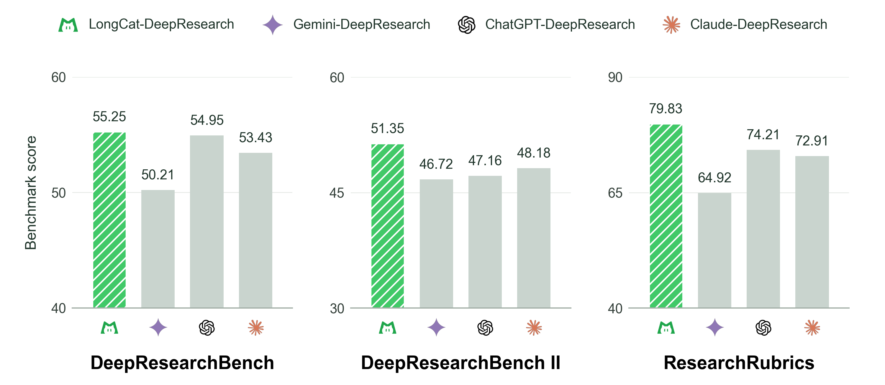
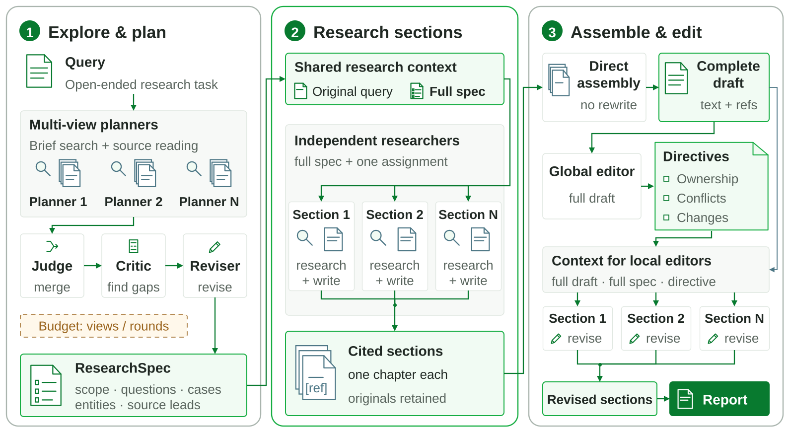
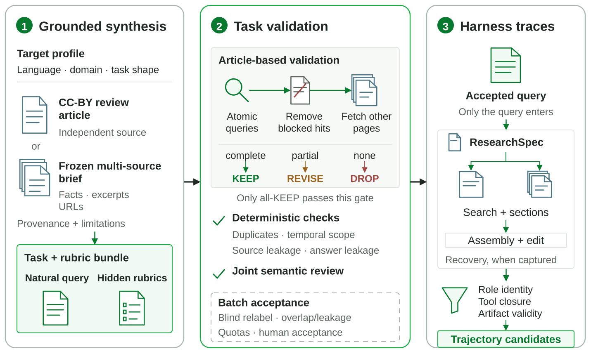

Integrating perspectives helps
On a fixed ResearchRubrics subset, integrating three Writers through the Judge raises the final total from 81.67 to 85.13 versus a fixed single-Writer plan.
LongCat-DeepResearch combines a model built on LongCat-2.0 with improvements in deep-research capabilities and the LongCat-DeepResearch harness. These improvements are intended to be incorporated into the next general-purpose LongCat model release.
The system organizes open-ended research around an executable ResearchSpec. Multiple planners explore sources and refine a shared agenda; independent Researchers develop citation-bearing sections; direct assembly and coordinated editing turn those sections into a complete report without asking one final writer to regenerate everything.
LongCat-DeepResearch achieves 55.25 on DeepResearchBench, 51.35 on DeepResearchBench II, and 79.83 on ResearchRubrics. Among the four systems compared in the report, it has the highest overall score on all three public benchmarks.

Deep research is not a linear retrieve-then-write task. New evidence reveals new questions, and each section can grow into a substantial investigation. Keeping every branch in one expanding history forces evidence, intermediate reasoning, and draft text to compete for context. Compressing those branches too early can discard details before their importance is clear.
LongCat-DeepResearch separates global coordination from local investigation. A compact ResearchSpec records what the report needs to establish and how the work is divided. The detailed evidence stays with the Researchers that use it to write each section. Completed sections, rather than recurrent summaries, become the artifacts passed into composition.
The harness moves from an inspectable research agenda to independent section research, then coordinates the resulting text through direct assembly and global-to-local editing.



Explore before committing. Planning Writers briefly search and read before proposing candidate specifications. A Planning Judge integrates their perspectives, a Critic looks for missing questions and cases, and a Reviser updates the plan. The resulting ResearchSpec records scope, research questions, required entities or cases, provisional source leads, and section responsibilities.
Research and write in independent section contexts. Each Researcher receives the original query, the complete ResearchSpec, and one assignment. It continues gathering evidence and writes a complete cited section from its own research history. The ResearchSpec is shared; the detailed tool interactions are not forced into one context.
Assemble first, then coordinate. The harness mechanically assembles the sections without rewriting them. A Global Editor identifies conflicts, repeated material, and ownership; Local Editors revise assigned sections against those directives. Global judgment and local generation are separated, while the original section artifacts remain available for inspection.
The same stage interfaces used at inference time provide concrete units for building and checking research-oriented training data.
Ground questions and rubrics in independent source material. A target profile and either a licensed review article or a frozen multi-source brief condition the research question and its hidden task-specific rubric. Factual criteria require supporting evidence; analytical criteria specify the comparisons or inferences the report should make.
Validate the task before collecting a trajectory. Bounded searchability checks look for alternative support after excluding the construction article. Additional checks cover duplicate criteria, answer leakage, temporal scope, and question-rubric alignment. KEEP, REVISE, and DROP decisions preserve the distinction between complete, partial, and missing support.



Collect the real stage dependencies. Accepted queries drive teacher executions of the harness, recording candidate and final ResearchSpecs, tool calls and observations, cited sections, assembled drafts, and editorial decisions. Filtering checks role identity, tool-call closure, and intermediate-artifact validity.
Research-related data are used alongside other data in the mid-training and post-training of LongCat's general-purpose models. A candidate trajectory does not, by itself, establish inclusion in a trained checkpoint.
The comparison treats each Deep Research product as a complete system, including its native tools and budgets.
| System | DeepResearchBench | DeepResearchBench II | ResearchRubrics |
|---|---|---|---|
| LongCat-DeepResearch | 55.25 | 51.35 | 79.83 |
| ChatGPT-DeepResearch | 54.95 | 47.16 | 74.21 |
| Claude-DeepResearch | 53.43 | 48.18 | 72.91 |
| Gemini-DeepResearch | 50.21 | 46.72 | 64.92 |
The compared products are accessed through their official clients with Gemini 3.7 Flash, GPT-5.6 Sol (xhigh), and Claude Opus 5 (xhigh) selected for Gemini-DeepResearch, ChatGPT-DeepResearch, and Claude-DeepResearch, respectively. DeepResearchBench and DeepResearchBench II use GPT-5.5 (medium) as evaluator; ResearchRubrics uses Gemini 2.5 Pro.
LongCat-DeepResearch leads on comprehensiveness, insight, and instruction following in DeepResearchBench; on information recall and analysis in DeepResearchBench II; and on explicit requirements, implicit requirements, and synthesis in ResearchRubrics. The breakdown also identifies room to improve readability, presentation, citation quality, and communication.
On the separate in-house benchmark, LongCat-DeepResearch scores 76.04 overall, 0.55 points below ChatGPT-DeepResearch. It has the highest Content and Analysis scores in that comparison, while Presentation remains weaker.
The report separates full-benchmark system comparisons from development-subset studies of planning, research context, and editing.
On a fixed ResearchRubrics subset, integrating three Writers through the Judge raises the final total from 81.67 to 85.13 versus a fixed single-Writer plan.
Critic/Reviser cycles raise planned coverage, but category and total report scores move differently. ResearchSpec is inspectable state, not a calibrated selector for the best report.
The full pipeline has the highest observed mean in the component study. Replacing parallel section Researchers with one whole-report Researcher lowers both displayed benchmark means.
Three enhanced Editor rounds reach a 53.96 average automatic readability preference and the highest displayed average native score, although benchmark-level trends differ.
| Model | Harness | DeepResearchBench | DeepResearchBench II | ResearchRubrics |
|---|---|---|---|---|
| LongCat (previous release) | ReAct / direct report | 47.65 | 33.13 | 60.33 |
| LongCat (previous release) | Current harness | 53.58 | 48.68 | 71.90 |
| LongCat (current) | Current harness | 55.25 | 51.35 | 79.83 |
All three configurations are evaluated on the full benchmarks. With the previous model fixed, the current harness improves every displayed score. Holding the current harness fixed, the current LongCat model improves them further. The result supports treating model capability and research orchestration as complementary parts of the system.
A recorded portfolio-management trajectory shows how planning changes propagate into section research and how editing resolves overlap without regenerating the report.
The merged ResearchSpec assigns 19 subsections across the user's four themes.
The Critic identifies Deep Portfolio Theory as a missing direction; the Reviser adds a concrete question to S2.2.
Independent Researchers expand assignments into cited prose, including CAPM evidence and the newly added topic.
The Global Editor assigns detailed Fama-French coverage to one section; the Local Editor retains a concise finding and adds a cross-reference.
The artifacts make the change inspectable: the added research question appears in the revised ResearchSpec, the evidence appears in section drafts, and the ownership decision appears in the final edit. The same case also exposes limits: the final report retains an internal section identifier and still misses some benchmark requirements. Traceability helps diagnose gaps; it does not guarantee complete coverage.
If you find this project useful, please cite:
@techreport{longcatdeepresearch2026,
title = {LongCat-DeepResearch Technical Report},
author = {
Meituan LongCat Team and He Zhu and Yue Xu and
Xunliang Cai and Yan Chen and Fan Yang and
Lingchuan Liu and others
},
year = {2026}
}